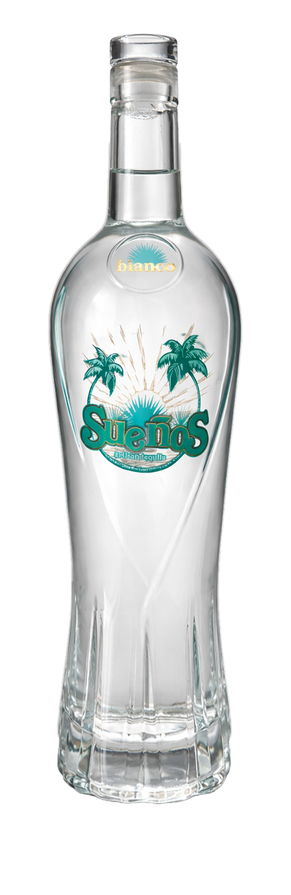
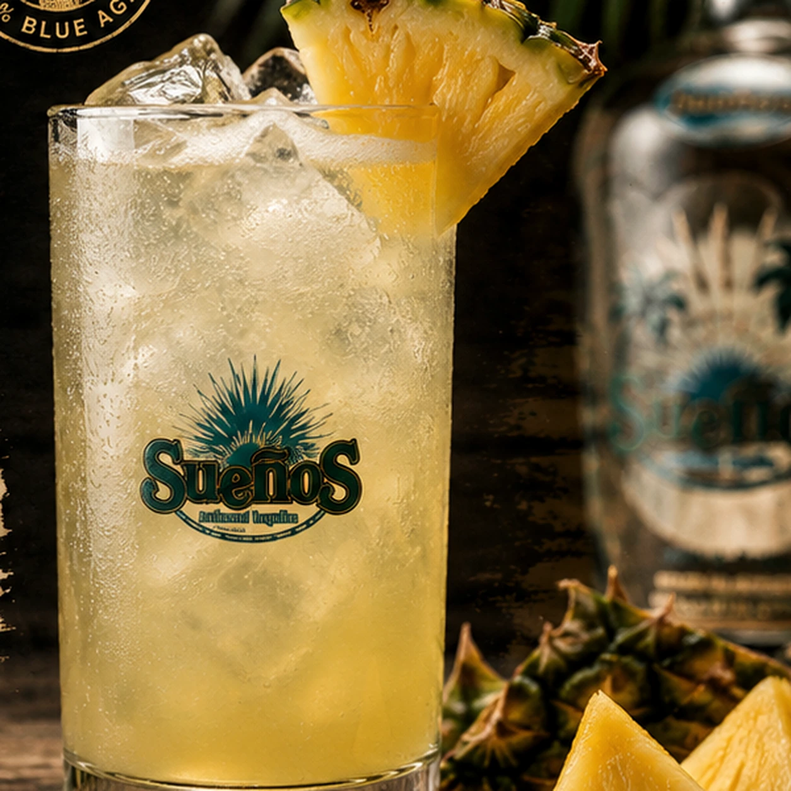
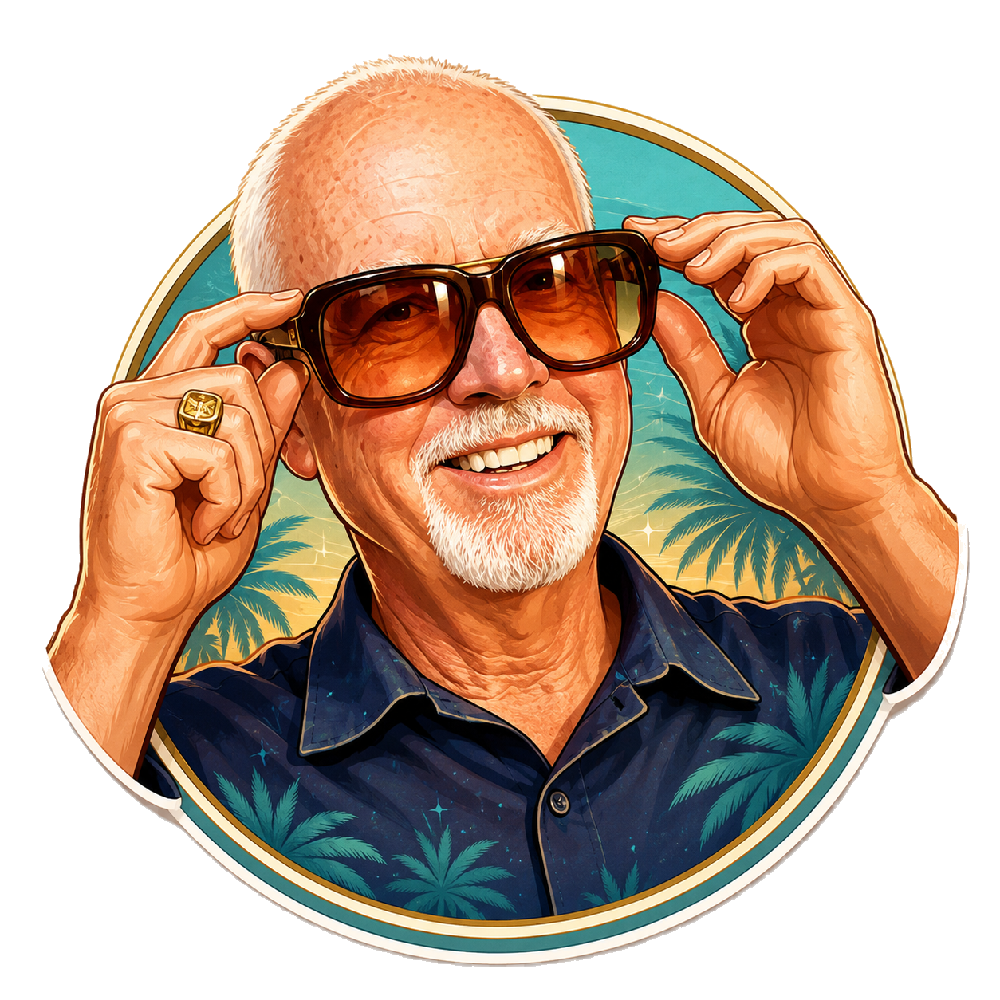

La Línea Don Terry
Consejos cuestionables. Excelente energía tequilera.
Elige lo que necesitas. Don Terry ofrecerá el tipo de orientación que ninguna institución acreditada aprobaría.



Don Terry Está en la Línea
Elige una opción para recibir una respuesta.